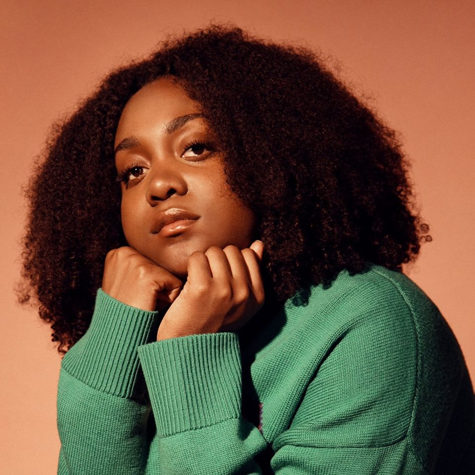

About the Artist
Noname was born Fatimah N. Warner on September 18th, 1991 in Chicago, Illinois. Her career and artistry began in the early 2010s as a slam poet, winning 3rd place in the Louder Than a Bomb poetry competition. Just a few years later she was featured on Chance The Rapper's Acid Rap Mixtape, which is now known as one of the best rap albums ever.
Noname released her own debut album Telefone in 2016, and a second album, Room 25 a couple years later.
Noname is also passionate outside of the studio, spending her time participating in activism. She hosts a book club that focuses on reading books that are more radical, promoting change.
Discography
Mixtapes
- Telephone (2016) Notable songs
- Shadow Man
- Diddy Bop
Albums
- Room 25 (2018) Notable songs
- Self
- Ace
- Sundial (2023) Notable songs
- black mirror
- namesake
Singles
- Song 31 (2019)
- Song 32 (2019)
- Song 33 (2020)
- Rainforest (2021)
Collaborations
- Chance the Rapper
- Lost (2013)
- Finish Line / Drown (2016)
- The Tragedy (2017)
- Mick Jenkins
- The Truth (2013)
- Comfortable (2014)
- Angels (2016)
- Saba
- Secondhand Smoke (2014)
- Church / Liquor Store (2016)
Why Noname?

"I try to exist without binding myself to labels. Im not really into labels at all, even the way I dress; I usually dont wear anything with a name brand. For me, not having a name expands my creativity. Im able to do anything. Noname could potentially be a nurse, Noname could be a screenwriter. Im not limited to any one category of art or other existence, on a more existential level"